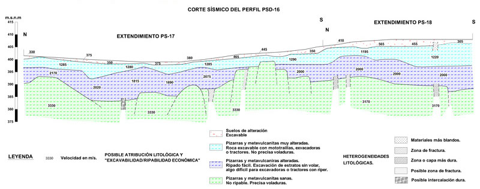

Seismic Refraction


Refraction seismic is possibly the most used geophysical technique in Civil Engineering for the study of the most superficial layers of the subsoil, in order to define the alteration of the materials that compose them, detection of faults and / or fractures, zones of Possible landslides, location of fills, etc.
Basically this technique consists of generating a seismic wave train, using an appropriate energy source (hammer, "gun", weight drop, dynamite, etc.) and measure the time of travel of these waves, once refracted, fulfilling the Snell law, in the different layers or interfaces with sufficient acoustic impedance contrast (velocity * density), between the energy source and a series of sensors (geophones), arranged in a straight line from it (profile).
From the analysis and interpretation of the distance-time (called dromocronic) graphs, the thicknesses and seismic velocities, P wave, of the different layers that compose the subsoil are obtained.
Interpretation by ray theory

Interpretation by seismic tomography


Applications
GEOTECNIA: Ripability, lithologic arrangement, fault and fracture detection, etc., in linear works (road and railways), dams, buildings, etc.
MINING: Quarry study.
ARCHEOLOGY: Detection of foundations.
Examples
Study of ripabilities and lithological structure for a motorway
Degree of alteration of granite formations

Study of the slope of a reservoir